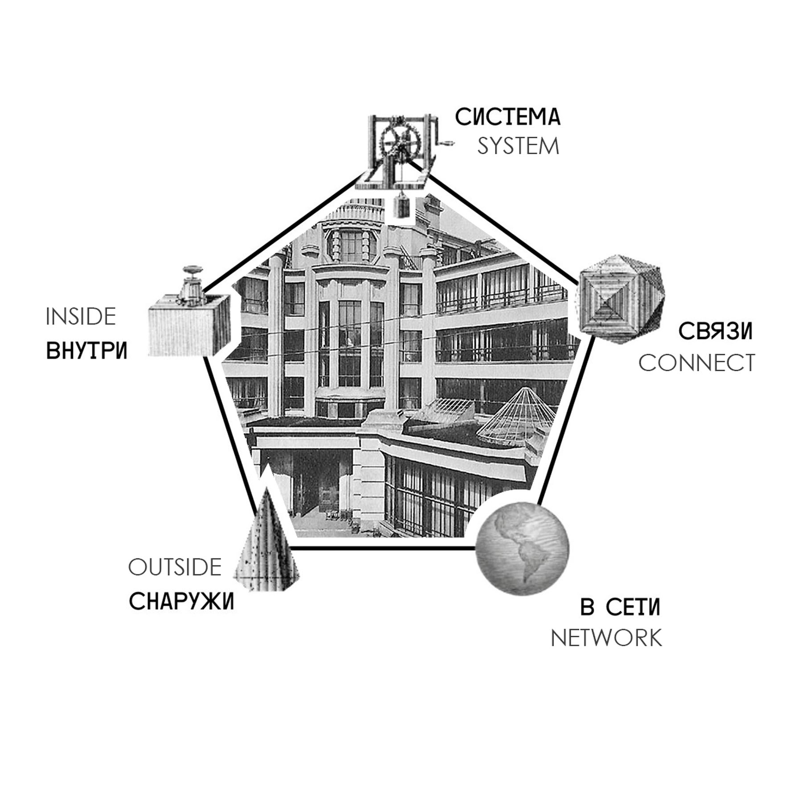
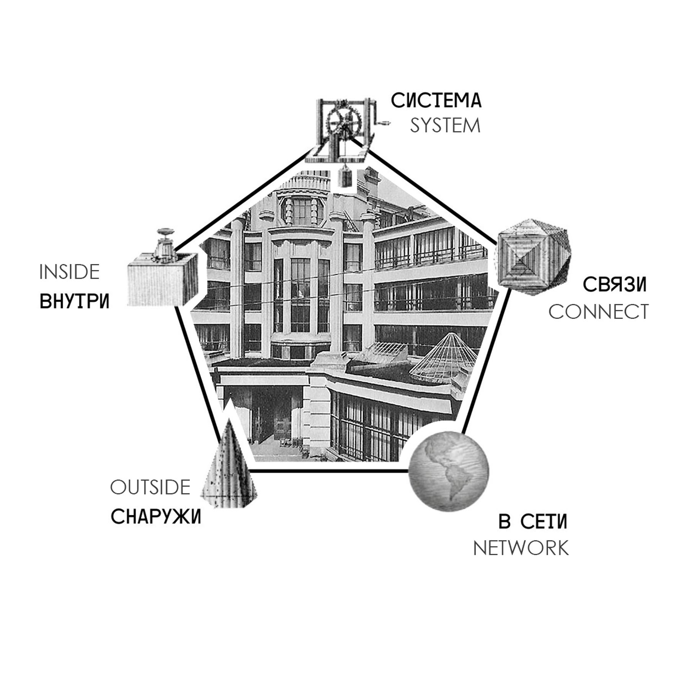
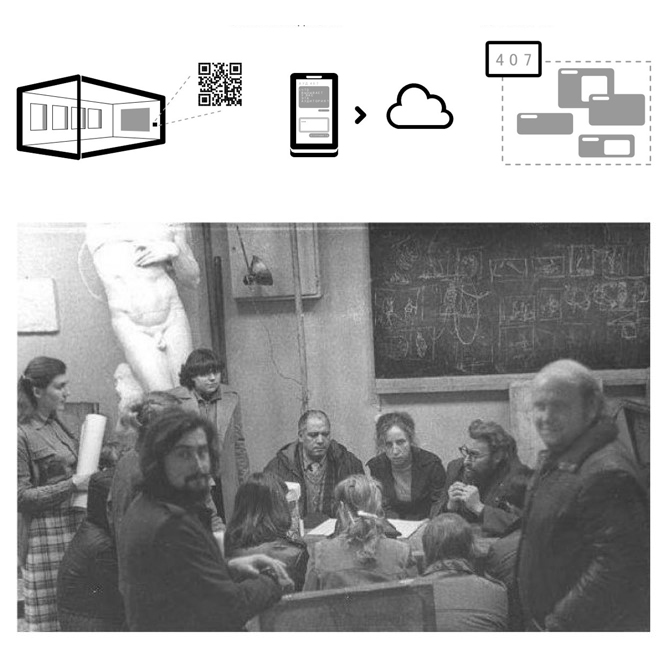
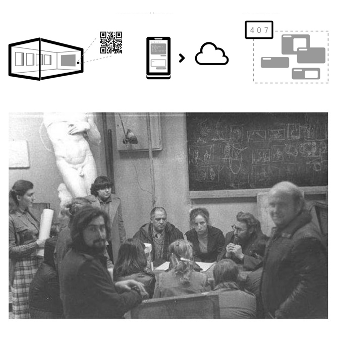
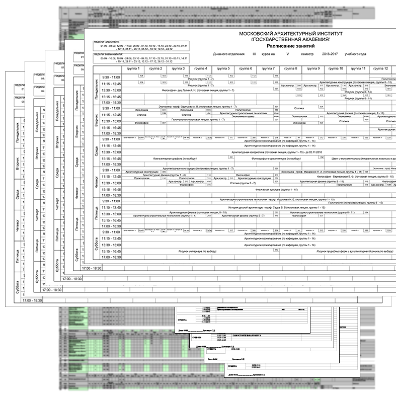
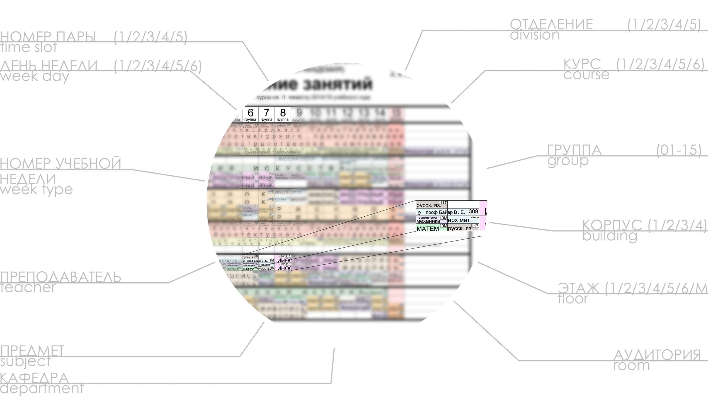
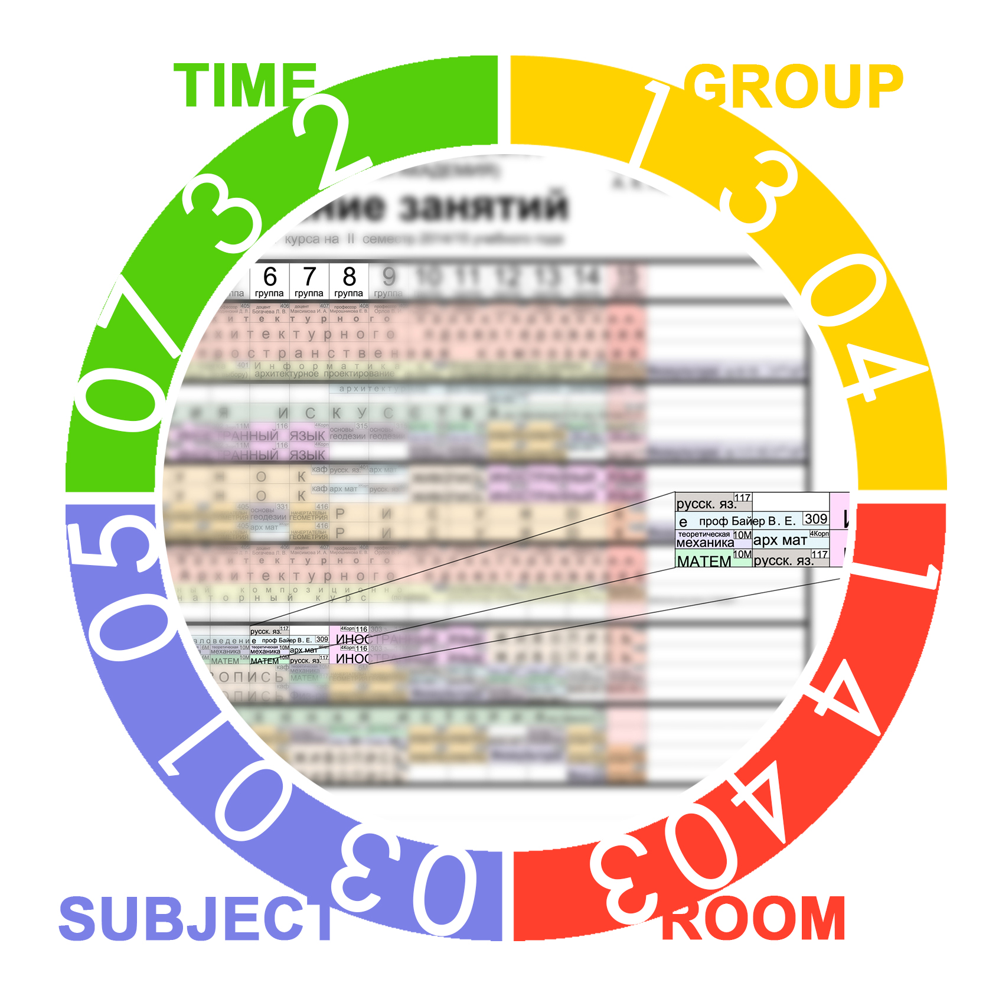
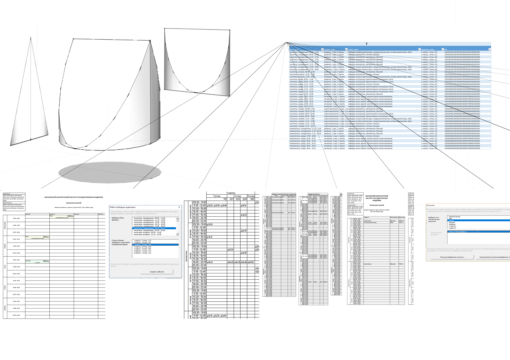
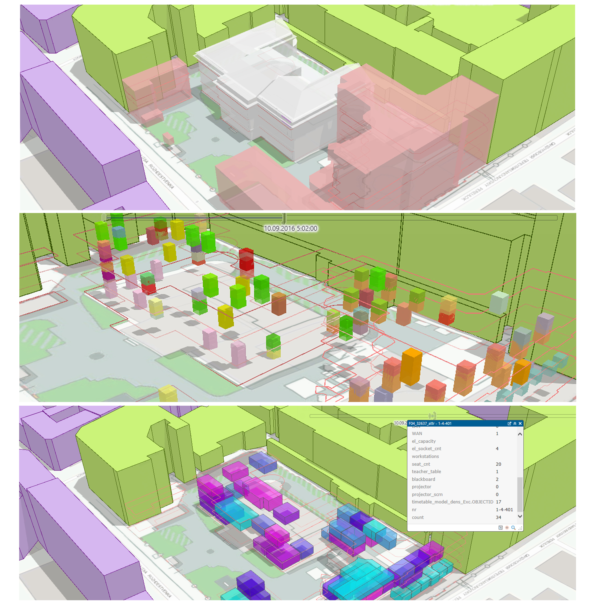

Multifunctional research group 'Point of View' at Moscow Architectural Institute was analyzing and possibly proposing improvements in quality of spaces and experience. The goal for 'System' branch specifically was to create an up-to-date model of its historic buildings in use and through computational tools, such as BIM, GIS, etc., look for patterns and problems we could address.
Description
 
From the start the goal was not so much to visualize but rather unveil hidden layers of environment parameters. As part of the process we experimented with various data-points: simulated sunlight exposure, inventorization data, schedule and occupation information, mood and impression questionnaires. This post focuses on intervention for timetable.
Project Context
As of today the system of generating the timetable remains manual. Furthermore, even the presentation remains practically drawn in. The structure of studies indeed requires rather complicated expert system to navigate: multiple buildings (hosting both students and administration), short-term events, varying dedicated time per subject per period, varying approaches to group divisions by subjects etc. Moreover, working this way the created timetable is targeted for students and is not as comfortably useful for administration. The question arose: could we without drastically changing the structure simplify it to be analytical and thus optimizable?
Current State
First major break-through came from going even more detailed and fragmented. We decided to take one hypothetical event and list all possible qualities it could have from building to teacher, from weekday to students attending etc. Grouping all of them revealed that all that complexity can be distilled into 4 compiled data structures.
Category Development
Thus not going too far in details we developed a model of institute activity. With 'Time', 'Place', 'Subject' and 'Students' - each necessarily playing their role in all of the events in different combinations. So for a subject from one division with 3 groups from a course in one timeslot of a week and with one teacher in one room on one floor in one building we listed three 'Events'.
Data Architecture
This meant that we could treat all the complexity as a database. Moreover, if further down we could merge this dataset with various others such as inventory data, sun light exposure of rooms, preferences of the teachers or even real-time air quality data - we could implement a complex and interactive big-data driven workflow. Plus it would work with a principle of projections various queries for certain points of interest with unique relevance to the data (table for the room activity, table for per teacher activities, etc.).
Table
That would potentially remain in forms of tables and numbers, but having done BIM-model of buildings we focused on demonstrating power and unique perspective of spatial visualization and temporal animations the model + data could bring through building GIS. Thus the example we generated were among others spatial distribution of events by subject departments, densities of usage of the spaces, comparison of individual timetable in the rooms. Unfortunately, at this point administration considered this system too big of change and continued using previous approach.
Model Correlation
Многофункциональная исследовательская группа 'Точка зрения' анализировала и разрабатывала потенциальные шаги интервенции в Московском Архитектурном Институте для улучшения качества пространств и опыта в целом. Цель направления 'Система' в этом контексте фокусировалась на создании действующей модели исторического здания и с помощью инструментов компьютерного проектирования (таких как BIM, GIS и т.д.), чтобы выявить скрытые закономерности и незатронутый потенциал.
Описание
С самого начала целью было не столько визуализация, нежели выявление скрытых характеристик пространства. В процессе мы экспериментировали с различными параметрами: симуляции освещенности аудиторий, инвентаризационные данные, расписание и информация занятости аудиторий, опросы настроения и впечатлений. Этот пост фокусируется на исследование и разработке в области расписания.
Контекст
На текущий момент процесс создания расписания в большой степени ручной. Более того, репрезентация его также практически рисуется вручную. Структура для обращения действительно требует сложную экспертную модель, сочетая в себя множество зданий (как для администрации, так и для студентов), кратковременные мероприятия, варьирующееся время, отведенное для предметов по семестрам, варьирующийся подход к разделению групп по предметам и так далее. Более того сгенерированное таким образом расписание интуитивно не может быть использовано остальными участниками процесса. Таким образом, возник вопрос, можем ли мы без значительного нарушения учебного процесса упростить структуру, чтоб та стала анализируемой, а значит и оптимизируемой.
Текущее состояние
Первое крупное достижение пришло, наоборот, от углубления в еще более дроблёное и детализированное состояние. Мы вычленили одно мероприятие из расписания и перечислили все характеристики, какие могут его уникально сформулировать: от здания до преподавателя, от дня недели, до присутствующих групп и т.д. Сгруппировав их между собой, из всей этой сложной структуры вышли всего 4 расширенных категории.
Выявление Категорий
Так, не углубляясь в излишние подробности, мы разработали модель активности здания, где каждое событие характеризуется 'Время', 'Место', 'Предмет' и 'Студенты'. Например, одна пара с одной кафедры у трёх групп с одного курса в одно время в одну неделю преподаваемое одним преподавателем в одной аудитории на одном этаже в одном из зданий мы создавали три 'События'.
Архитектура Данных
Это значило, что мы можем интерпретировать всю эту сложную структуру как базу данных. Более того, если впоследствии совместить ее с прочими источниками данных: инвентаризация, освещенность аудиторий, предпочтения преподавателей или даже данные о качестве воздуха в реальном времени. Плюс система будет функционировать по принципу проекций - различные данные актуальны для разных функций в различных форматах (таблица активности в конкретной аудитории, таблица занятий для каждого преподавателя, и т.д.).
Таблица
Эта система могла остаться лишь выборками данных. Однако, имея BIM модель здания, мы сфокусировались на демонстрации силы и уникальности пространственная перспектива и временные анимации способны внести в процесс работы с расписание посредством GIS. Мы сделали несколько примеров таких выборок: распределение мероприятий по кафедрам, плотность загрузки аудиторий, сопоставление расписаний различных аудиторий. К сожалению, на данный момент администрация сочла данную системы слишком большим изменением и сохранила предыдущий подход.
Корреляция